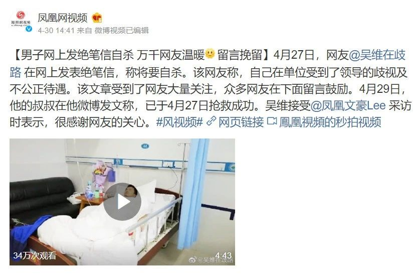
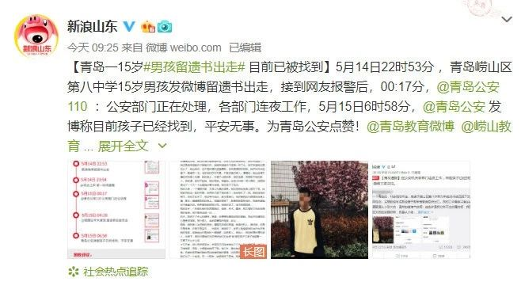
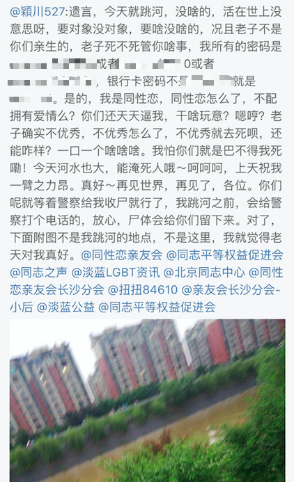
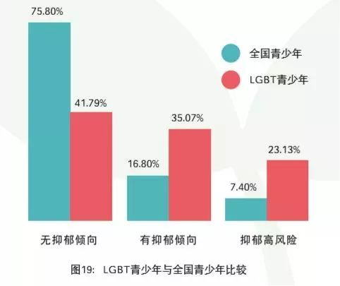
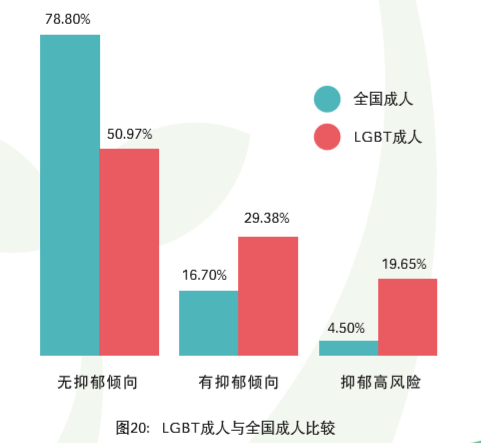
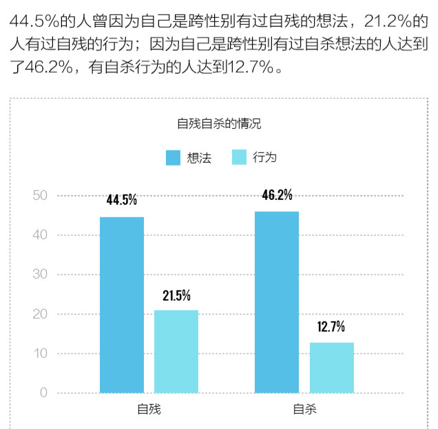
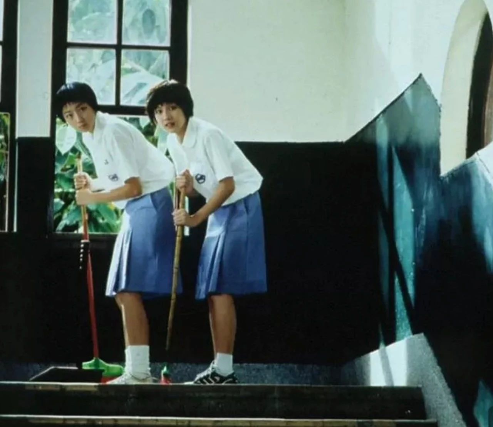
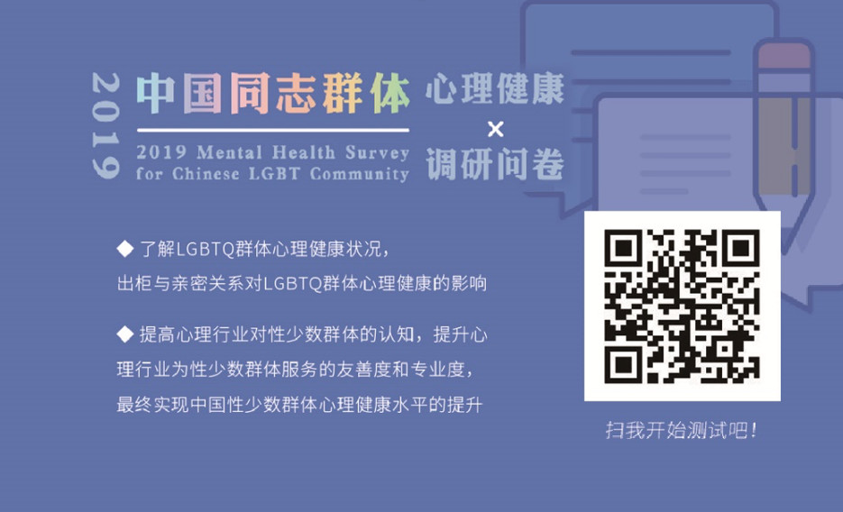
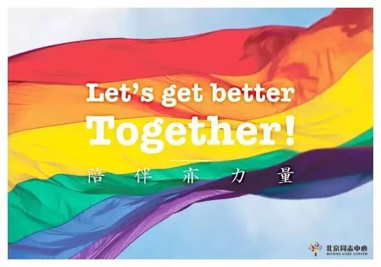

以下文章来源于北同文化 ，作者北京同志中心
北京同志中心官方微信。北京同志中心成立于2008年2月14日，作为一家民间公益组织，通过在北京地区提供社区服务和开展倡导活动来增强中国同志（LGBT）人群的自我认同；推动同志运动，消除歧视，实现平等；并促进多元文化和公民社会的发展。
作为性少数群体，目前也许会觉得自己是一群很难进入到美好生活中的边缘人。
近三个月来，关于同志自杀的话题层出不穷，不断引发舆论热点登上热搜：
四月，网友“吴维在歧路”在网络上发出绝笔信，在这封怨书中他陈述：“回首2015年4月27日我拖着行李箱来着这个城市，已经四年了。在这四年里，无论我工作多么努力，始终都逃脱不了他人在背后对我的指指点点。如果硬要说出原因，无非我是一名同性恋者……”

五月，一位15岁的青岛初中男孩留下遗书出走，遗书呈现的也许是性少数群体的共鸣：“我是同性恋。没想到这句话我这辈子都未曾敢亲自说出口…我是从小被身边的人，学生们，老师们，或者其他的人们讽刺挖苦，拳脚相加长大的。我也知道，这是不少gay的童年经历。不谙世事的我们不明白反抗，也不敢告知于老师家人，朋友，我甚至不敢于自我肯定。我害怕，恐惧这个世界。…”

六月，网名“颍川527“的少年，从资江一桥跳河结束生命。他死前在微博上发出“人生没意思”、“ 同性恋就不配拥有爱情吗”的悲观感慨，并在遗书中揭露内心深层次的渴望：“…后天的遭遇让我变成了一个极度缺爱，缺乏安全感的个体，所以我希望能有一个人，能撑起我心中的保护伞，陪伴我一起走下去…”

以上三个案例只是冰山一角，每年、每个月、甚至每天，性少数群体因极端的心理状态而引发的事件层出不穷。人们可能以为他们自杀是屈服于现实，其实恰恰相反，自杀是一种最为极端的对抗心。性少数群体中有的人失去了生命；有的人即使肉体得救了，但精神、情绪仍未获救，仍需顶着重重心理压力孤独地作战。
大家也许常听到诸如“性少数群体生性柔弱，承受不了生命的重量”的偏见。
北京同志中心2014年完成的《全国同志人群心理健康调研》显示：LGBT 青少年中抑郁高风险的比例是全国青少年的3倍（图 19），LGBT 成人中抑郁高风险的比例是全国样本的4倍（图 20）。

北京同志中心2017年的跨性别生存现状调查显示：21.5％的跨性别有自残的行为，12.7％的跨性别尝试过自杀。

实证研究的确表明，性少数群体的心理健康问题严重。性少数群体并非特殊物种，其与异性恋群体一样，生活中也会出现抑郁、焦虑等各种情绪感冒的症状，至暗时刻来临时也会陷入极度的悲观失落，性少数群体也渴望身边的人能伸出手，给予关怀。但不同的是，这个群体面临着异于常人的压力，面临着缺少社会支持的环境，压抑让其背负着太多的情感负担和负面情绪。亲人的不解、上司的排挤、同学的霸凌以及来自社会的污名和歧视，都可能成为压垮自己的稻草。
下面让我们来看看性少数群体会面临哪些独特的压力，这些压力又是如何对这个群体产生生理、心理上的不健康影响的。
这是每个群体每个人都可能面临的一般性压力，如失业／被炒鱿鱼。
这种一般性压力可能任何群体都会遭遇，但如果你是性少数群体，由于特殊身份和歧视，你可能更容易经历这样的事件。
这类事件会给个体带来有两方面影响：１，让个体更容易感受到生存的压力；２，让个体更加小心的隐藏自己的性少数身份，而这种隐藏既阻碍了个体完成自我认同，同时“隐藏”这一行为本身也会给个体带来心理压力。
这类压力事件，会给个体身心带来创伤性的影响，例如：校园霸凌、暴力袭击等。
这类基于性少数群体特殊身份引发的压力事件，很可能是长期的慢性的压力事件，例如性少数青少年很可能长期遭受校园霸凌的威胁，这无疑给个体带来严重的心理健康问题。并且这种创伤性事件会让个体对自己的性少数身份产生怨恨和愤怒，严重阻碍个体自我认同的进程。
例如：日常填表需要填写性别、婚姻状况；那么每一次填写都在提醒个体的性少数身份，提醒个体自己在生存权中的某一项或多项是没有选择权的。
再例如一些媒体的歧视和污名，关于LGBT群体的歧视性言论或刻板的观念随处可见。
这样的一些细微的压力源看起来甚至不能称为伤害，但是它频繁的发生，这些微小的事件不断的提醒性少数群体，在社会中是被边缘的，是被歧视的，是不能跟其他人一样享有某些权力的。
这类压力源，是个体由内产生的压力，对个体心理健康的影响更加严重。
例如：一个从小生活在恐同环境中的个体，很可能不认同并且恐惧自己是同性恋，Ta已经把这种外部的恐同内化为自己的感受，不需要外界发生任何压力性事件，个体已经每天都在体验着焦虑和害怕，个体很可能因此时时刻刻面临着自我厌恶和憎恨的压力中。
这类压力事件，与个体息息相关，就是深柜——隐藏自己的性少数身份。
这种深柜的行为会产生矛盾的双面效应，这种隐藏可以被看成是一种应对外界压力的策略，隐藏的行为是为了保护自己免受外界的伤害；但同时深柜本身又是一种压力源，因为在个体隐藏自我的过程中产生大量的压力，很多认知研究发现一个人要对自己的身份时时刻刻去撒谎，需要动用大量的认知资源。就像我们常说的“有了第一个谎言，后面要用无数的谎言去圆它”。
心理学认为，能否真实的做自己对于一个人的心理健康非常重要；对于性少数群体来说，性倾向或者性别认同对个体来说是如此重要的一部分，但是不能向身边最亲近最信赖的人去分享这些真实感受，真实情绪，这无疑是非常影响心理健康的一类压力。

大家看到的故事不仅仅是故事，是性少数群体的现状，也许也会是这一群体的未来。性少数群体们也许感到身处逆境，需要对自己的心理有更多的关注，给予自己肯定和支持。与此同时，社会也需要给予这个群体更多心理层面的关注和支持。
我还记得台湾那部经典的电影《蓝色大门》，身为lesbian的女主孟克柔每天都在篮球场看台旁的墙上，痛苦地写着：“我是女生，我喜欢男生”。可以感受到，当压抑自我时，人很难成为一个完整的人。一部分的自己不被允许存在，这是很多人们长期抑郁的根本原因。
从这一份调查问卷起，性少数群体也许能多一些对自我觉察，更了解自己的心理状态，更肯定、关怀自己。若大家需要心理支持，请拉紧我们的手，我们希望更多人在心理上得救，我们永远在这里陪伴你。
填写问卷大约需要20分钟

作者：夏六日、四月
编辑 Victor
【文章精选】
我是29岁的跨性别，我不想再折腾人生了丨你好，独角兽邮局03
